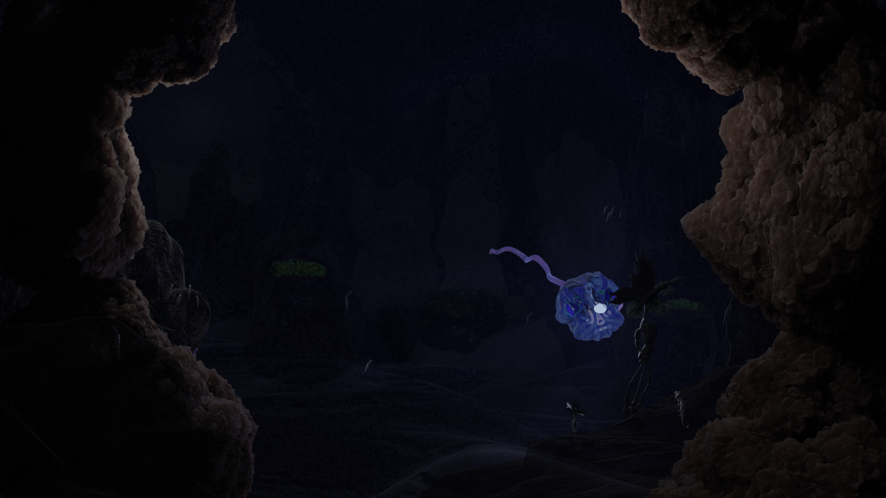
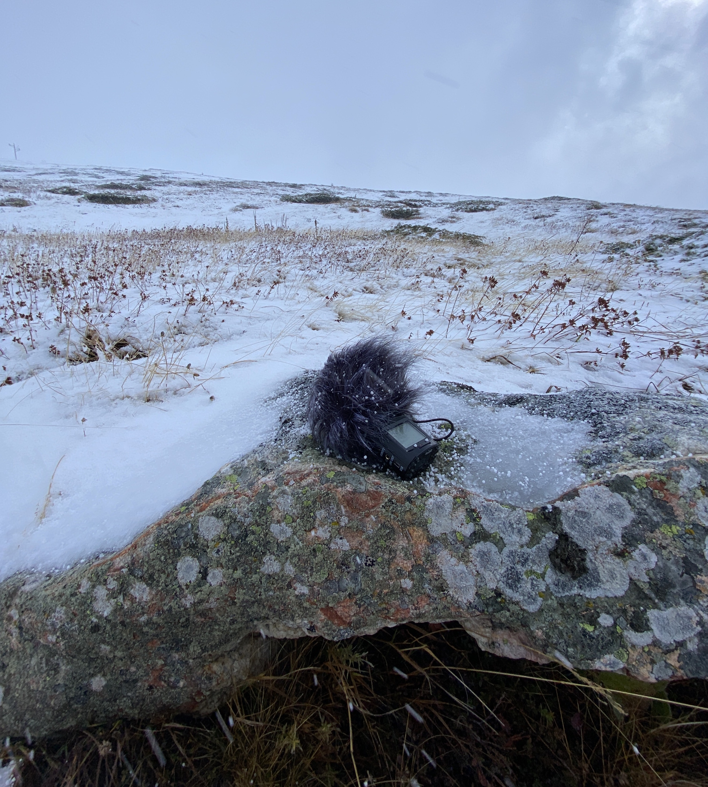
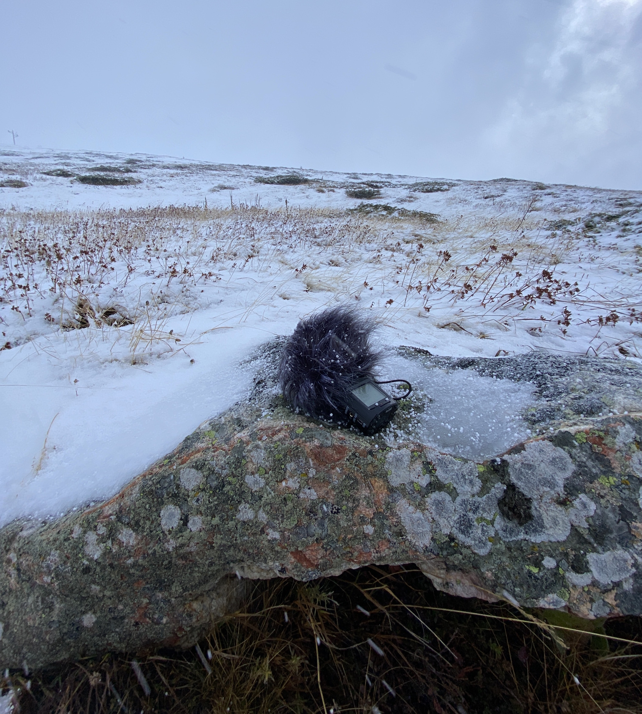

William Kosse (1999) is a graphic designer from Mauritius who is currently studying at the Royal Academy of Art, The Hague.
Abi
2023
Character Creation

There was a guy named Edward who was lost after his parents died. He found solace in games and believed it was a great way to express himself. This passion led him to delve into the world of game design, where he created a character named Abi. Abi was Edward's alter ego, a reflection of his struggles and emotions. Through Abi, Edward told his own story and found a way to cope with his loss. Along the way, he learned about the character creation pipeline and what it takes to make a video game.
"My story begins at the dawn of time. My name is Abi and I live in the Challenger Deep. I don’t really know who I am and where I come from. Mum and dad have been away for a while; there was a blinding light and they vanished. It’s dark here most of the time. I like it, I feel safe. I fend for myself. When I’m hungry my esca turns on, it faintly lights up my surroundings and my appetite disappears. As time passes, I can feel my body expanding, my esca shines brighter and I see further. Maybe it’ll help me find my parents."


Vieil Oiseau
2023
Ceramic & metal sculpture, Sound piece

In my work, I explore my roots through the diverse landscapes of my
homeland, Mauritius. I have sculpted Oiseau, a clay and metal creature
inspired by dozens of extinct birds that were once native to the
Mascarenhas Archipelago. Due to the region's geographic location and
centuries of colonialism, my artwork pays tribute to the ethnic and
cultural diversity of the Mauritian people.
Through the
gaze of this hybrid creature he visits the stories of colonialism,
immigration and exploitation. he accompanying soundscape captures the
relentless pain and exhaustion endured by African, Malagasy, and
Indian slaves. It tells a story of human perseverance and triumph in
the face of adversity.
Weather Fields
2022
Quadraphonic sound piece
"Weather Fields" investigates listening as a design practice to enhance our understanding of the rapidly changing ecology and human geographies. By listening to weather patterns and landscapes at different scales, designers can move beyond fixed approaches and adopt a more active mode. Through research and experimentation, methods have been developed to record and interpret sounds, which can be used to construct climate-related imaginaries and sonic world building.

Snow moves through the air as it forms itself around particles in the atmosphere. It drags itself to the ground, shifting our perception from an innocent, romanticized symbol of beauty to a dangerous, suffocating and cold blanket. Through field recordings made on Rila mountain in Bulgaria, this sound piece explores the body moving through snow and snow moving through the environment. In that, it portrays how transporting yourself up a mountain is a simultaneous reversed experience of how snow travels down that mountain.
 



With: Inge Maier
Playland
2022
Video, Zine
Imagine hills and valleys. Imagine variety of terrain, rocks and fallen logs. Imagine being able to freely choose your path through this environment of hollers which regulate your manoeuvring? What does it mean for humans to live in an environment regulated by a rectangular grid? What does it mean to grow up in a city in which you can freely move in approximately 15% of its surface? How can we combat the feeling of artificiality in a heavily surveilled urban space through play and make it an inclusive and illuminating experience? In general, games are critically important in establishing healthy social interactions, and failing to play them can result in inappropriate aggression, anxiety and social isolation. Play can act as a release valve that allows people to feel a sense of their own agency, and to make some kind of sense of their experiences on their own terms. When are playgrounds for children going to start to resemble concrete urban landscapes? Why should we pay more attention to the signs of the inevitable need of play in the urban space? Because maybe through examining this act of freedom, we can learn more about being free.

With:Bartosz Pierściński
Special thanks: Jeroen Jongeleen, William Britten, Francis Alÿss,
Thomas George Davies, Nils Norman, dismalgarden.com
Écouter
2022
Book design, DIY Sound system, Sound piece

© Helena Roig

This book is an exploration of the ways in which our past experiences shape our present reality. By examining the impact of childhood experiences on perception and beliefs, it gives insights into the interplay between my personal history and the world around.
© Emilia Mäenpää
Drawing inspiration from the DIY Sound System movement, I constructed a unique subwoofer and metal horn that are designed to emphasise the intrinsic tonal qualities of sound. However, the shape and form of these components play an equally important role in shaping the sound that is heard. The subwoofer's narrow but defined sound spectrum is due to its design, which is intentionally poor in some respects. This design choice brightens up specific frequencies while muffling others, resulting in a distinctive and unusual sound that is unlike anything produced by a conventional sound system. Meanwhile, the metal horn's shape has been carefully chosen to enlarge the sound's soundscape. The material used to construct the horn also plays a crucial role in shaping the sound, creating a unique resonating timbre. The way a speaker is constructed affects the sound it produces, much like how our upbringing shapes our personalities.
Mapping American Gun Violence
2021
Data Visualisation
The maps exhibit the initial 1000 incidents of gun violence that took place between 2013 and 2018, providing a concentrated representation of where these incidents tend to occur. The aim is to generate conversations and initiatives regarding gun violence in these specific areas. This website includes partial data extracted from www.gunviolencearchive.org, an online repository of gun violence events in the United States. By utilizing geocoding, the scraped addresses were mapped using folium, a Python library, and displayed on leaflet maps.
For 2013, the figures are incomplete. The time, date and number of individuals involved in the incident are not known.Select a year: 2013 2014 2015 2016 2017 2018
I want a divorce, John
2022
Text-based video game

The small game I've developed is an interactive, text-based game that is based on real-life interactions. game is based on real-life interactions that feel like you're talking to a non-playable character While players may feel like they have control over the narrative at first, the game is intentionally designed to throw them off guard with unexpected twists and turns.

Computer: On a splendid summer day I took my snail on a walk. Come to find out I left my feet at the crib to iron the dishes because the grass was blue, blue like the ocean. Remember when I mopped the ocean? Come to find out I had to take my grandma to the vet because the cat was barking. Can you tell me time?

Player: I am not drunk!

Computer: Well, okay. Let me see here's the way I feel. I remember Pandorosa episode I don't know is 60, 63. Paul came home, long day on the ranch. Paul was mad. The boys weren't home. The boys were going to be mad when they got home. And Paul, he likes to feel responsible. And he said to Hopsing: “Hopsing, how come you don't even have dinner ready to be put on the table?” And Hopsing said: “You never, ever thanked me for making dinner.” Paul was flabbergasted. He thought about it, and she was right. He never, ever told Hopsing how much he enjoyed the food that she put on the table for him and the boys. And he said, Hopsing, I'm flabbergasted. I think you're right. I've never have ever told you how much I appreciated you putting food on the table. But, it's not because I don't like your food. And, certainly it's not because I don't like to have you cooking the food for me and the boys, so you see Hopsing, I'd be lost without you. You're like my shadow in the afternoon, when I'm hungry and my shadow is long, you're there, right behind me taking care of me, and you know what? I've never thanked my shadow.
Pages of Sound
2021
Data processing, book design

The project is a book that explores my emotional response to George Bataille's "Histoire de l'œil". Through a secret language, I reflect on the taboo and secretive nature of the book and how secret messages were historically transmitted, such as through Morse code. I also created a new secret language to communicate with others and present Morse code as a language that could be revitalized. The book takes shape through multiple steps. In the first step, I created my own interpretation of Morse code, where each letter corresponds to a specific frequency played for a certain amount of time. Next, I created sound pieces based on this Morse code interpretation. Listeners were then given a pen and paper to represent the sounds they heard, resulting in an analog representation of cymatics. Through this project, I wanted to highlight the importance of understanding the stories behind sound and how they can be used to communicate in a way that is meaningful and intentional. Ultimately, my book seeks to inspire readers to engage with sound in a new way and appreciate the power of non-spoken languages in communication.